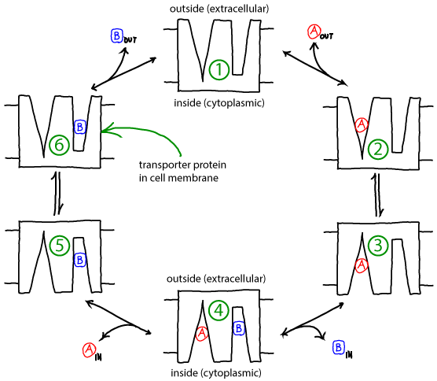
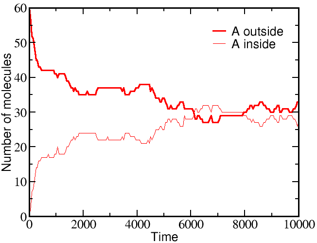
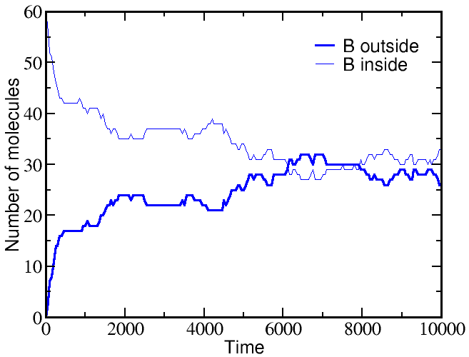
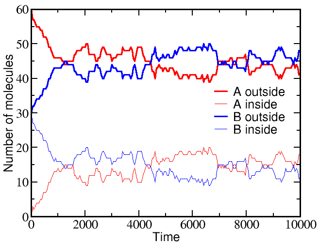

$
\newcommand{\conc}[1]{[\mathrm{#1}]}
\newcommand{\conceq}[1]{[\mathrm{#1}]^{\mathrm{eq}}}
\newcommand{\fidl}{F^{\mathrm{idl}}}
\newcommand{\kcat}{k_{\mathrm{cat}}}
\newcommand{\kmmon}{\kon^{\mathrm{ES}}}
\newcommand{\kmmoff}{\koff^{\mathrm{ES}}}
\newcommand{\kconf}{k_{\mathrm{conf}}}
\newcommand{\koff}{k_{\mathrm{off}}}
\newcommand{\kon}{k_{\mathrm{on}}}
\newcommand{\nai}{N_A^i}
\newcommand{\nao}{N_A^o}
\newcommand{\nbi}{N_B^i}
\newcommand{\nbo}{N_B^o}
\newcommand{\ss}{\mathrm{SS}}
$
Active transport in an alternating-access antiporter model
Free energy stored in a non-equilibrium gradient of concentrations across a membrane can be used by an antiporter ("exchanger") to pump another molecule against its gradient.
- Membrane-embedded transporter proteins can function as machines because binding events are coupled to conformational changes.
- The cycle below is a simplified, schematic model of a transporter for which binding events are coupled to "eversion" - transition between inward-facing and outward-facing conformations.
- The alpha helices in membrane proteins achieve eversion in roughly the same manner as you might re-adjust the orientations of a group of irregular pens and pencils held in your hand.

Basics of the antiporter cycle
- The antiporter schematized above can perform active transport using the gradient of one molecule or ion (e.g., A) to pump the other (B) in the opposite direction.
Free energy is supplied by the gradient(s) -- no other source of free energy, such as ATP, is needed.
- If the ratio of outside to inside concentrations of one molecule (e.g., A) is
higher than the other, the
cycle will be driven in a
particular direction (e.g., clockwise).
- A transporter such as the antiporter shown can be considered a "passive element": it does not supply any energy itself, but only transduces free energy stored in gradients. The transduction occurs due to the coordination of binding and conformational changes.
- Because it is a passive element, the antiporter does not "know" which molecule's gradient is meant to drive the transport of the other. Thus, if the outside/inside concentration ratio is greater for B, then the cycle will run counter-clockwise and A will be pumped by B.
- The model as shown is a simplified version that omits some possible
states and connections among states - e.g., both binding sites are assumed
to always face the same direction.
Additional states and connections could reduce the efficiency of pumping. See
also discussion in Hill's book.
The presence of additional states or connections would have to be verified on a
system-by-system basis.
Understanding how the cycle is driven
- A simple but powerful qualitative analysis starts by considering the condition of equilibrium.
Equilibrium describes a (hypothetical) very large set or ensemble of identical systems of which - on average - an equal number are executing the forward and reverse of every process.
Thus, for example, between steps 1 and 2, if there are $N_{12}$ systems in which extracellular ("outside") A binds every second, there is an equal number ($N_{21} = N_{12}$) for which A unbinds to the outside.
- In the perfectly balanced state of equilibrium, there will be equal numbers of systems performing full clockwise and full counter-clockwise cycles per unit time.
Thus, although individual cycles may pump A and B, there is no net pumping.
- Because the balance of equilibrium is so perfect, however, it can be disturbed at almost any point in the cycle.
For example, adding an excess of A outside will cause more 1-to-2 transitions, which will cause 2-to-3 transitions and so on, leading to clockwise cycling.
It is the binding process that provides directionality.
Binding events can be considered the "handles" used to drive a cycle in a given direction.
- Importantly, the cycle can also be driven by imbalancing the detailed equilibrium at any point in the cycle:
- Excess B added inside will also drive the cycle clockwise.
- Excess A added inside will drive the cycle counter-clockwise.
- Excess B will also drive the cycle counter-clockwise.
A quantitative model: Simulation and analysis
- We will employ a chemical-kinetics model, which is formulated solely in terms of state populations and rate constants for transitions among states, assumed to obey mass-action behavior.
- To keep the model simple, we will assume all rates are the same:
- $\kon$ will be the on-rate (see Notation) for all A and B binding -- for transitions from state 1 to 2, from 1 to 6, from 3 to 4, and from 5 to 4.
- $\koff$ will be the off-rate for all unbinding of A or B -- reversals of the transitions noted above.
- $\kconf$ will be the rate for all conformational transitions -- both directions between states 2 and 3, and between 5 and 6.
- We will assume that the outside and inside volumes are the same -- so that the numbers of A and B molecules tell us the concentrations in a simple way.
- The model is now fully specified. For example, the differential equation governing the population of state 1 (denoted [1]) is gievn by
\begin{equation*}
\frac{ d \conc{1} }{ dt } =
- \conc{1}\conc{A}_{\mathrm{out}} \, \kon - \conc{1}\conc{B}_{\mathrm{out}} \, \kon
+ \conc{2} \, \koff + \conc{6} \, \koff
\end{equation*}
- In words, the equation means that the population of the unbound state 1 decreases due to binding of A or B (from the outside) with rate $\kon$ and increases due to unbinding from either of states 2 or 6 with rate $\koff$.
Simulating the model
If we start a simulation with all A molecules on the outside and an equal number of B molecules solely on the inside, the system equilibrates to equal concentrations on both sides -- for both species (A and B).


However, if we start a simulation with B molecules equally distributed between outside and inside, and the A molecule all outside as before, there is a very different outcome.
The greater outside concentration of A tends to drive A molecules inward, but doing so requires "pumping" B molecules to the outside.
Because the B molecules "resist" having different outside and inside concentrations, the final equilibrium is one where the ratio of outside/inside concentrations equalizes between the two species.

These simulations were performed using BioNetGen, a rule-based platform for kinetic modeling.
The brief source code for the model (a .bngl file) can be downloaded by right-clicking here.
Analyzing the model
Perhaps the simplest and most important analysis of the model is deriving and understanding the equilibrium behavior.
In equilibrium, every process and its reverse will be in exact (detailed) balance -- the flow in both directions will match.
Hence, we need to write down balance equations for each set of arrows (connectings states 1 and 2, 2 and 3, ...).
Using $\conceq{X}$ to refer to the equilibrium concentration of component X, we write down the equilibrium equations for the three processes on the right side of the cycle.
\begin{equation}
\conceq{1} \, \conceq{A}_{\mathrm{out}} \, \kon
= \conceq{2} \, \koff
\end{equation}
\begin{equation}
\conceq{2} \, \kconf = \conceq{3} \, \kconf
\end{equation}
\begin{equation}
\conceq{3} \, \conceq{B}_{\mathrm{in}} \, \kon
= \conceq{4} \, \koff
\end{equation}
The equations for the left side mirror these.
Solving the full set of equations (by going around the cycle and eliminating one of the numbered-state concentrations at a time) yields the result
\begin{equation}
\label{equiltot}
\frac{ \conceq{A}_{\mathrm{out}} }{ \conceq{A}_{\mathrm{in}} }
= \frac{ \conceq{B}_{\mathrm{out}} }{ \conceq{B}_{\mathrm{in}} }
\end{equation}
As we saw in the simulations, equilibrium is reached when the outside-to-inside concentration ratios match for A and B.
In fact, because our transporter is a passive element, this result is independent of the rates chosen -- even if the rates are not symmetric (but be careful that the set of rates in a cycle has to be physically consistent).
Note that, perhaps surprisingly, the equilibrium point will depend on the initial condition.
This is true because our simple antiporter model does not allow "slippage" (where only an A or a B is transported in some cycles).
If there were some mechanism for A and/or B to switch compartments independently of the other, then the equilibrium point would not only have equal concentration ratios, but the ratios would be 1 -- equal inside and outside concentrations.
A more advanced discussion of the antiporter cycle describes further possibilities and the relation to a symporter cycle.
Thermodynamic analysis
In contrast to the kinetic analysis above, which includes a description of specific states of the antiporter, we can perform a thermodynamic analysis of the same system.
Using an ideal gas description, in analogy to what was done for binding and for understanding free energy storage in a gradient, arguably leads to a simpler description than we encountered using kinetics.
The thermodynamic analysis will directly lead to the equilibrium condition \eqref{equiltot}.

The thermodynamic model consistent with the mass-action picture above consists of ideal gases for each of the components: A molecules inside ($i$) and out ($o$), as well as B molecules inside and out.
The combined free energy $F$ for the whole system is the sum of the free energies for each of these ideal gases.
\begin{align}
F = & \fidl(\nai, V_i) + \fidl(\nbi, V_i) \nonumber \\
& + \; \fidl(\nao, V_o) + \fidl(\nbo, V_o) ,
\label{ftot}
\end{align}
where we have omitted the temperaure dependence that will not be pertinent here.
The total free energy is the simple sum of the component free energies because there are no (energetic) interactions between the components.
In an ideal gas, by definition, there are no interactions among molecules.
To obtain concrete results, we must specify one specific state of our system - something like an initial condition.
After all, the 1:1 exchange of A and B means that not every possible set of populations ($\nai, \nao, \nbi, \nbo$) is possible.
For simplicity, we shall assume that our reference state has all A molecules inside ($\nai = N_A, \nao = 0$) and all B molecules outside ($\nbo = N_B, \nbi = 0$).
Further, because we are considering a 1:1 antiporter (where one A always exchanges for one B), there is really only one variable that can change.
To see this, we can express all the species numbers in terms of $\nao$, the number of A molecules outside, and the constant species totals $N_A$ and $N_B$:
- because an A molecule must be either inside or out, we have $\nai = N_A - \nao$;
- because of the 1:1 exchange, $\nbi = \nao$; and
- because a B molecule must be either inside or out, $\nbo = N_B - \nbi = N_B - \nao$.
Using these relations and noting that $\fidl(N,V,T) = N k_B T \ln [ N / (V/\lambda^3)]$, we can now re-write the total free energy from \eqref{ftot} as
\begin{align}
\frac{F}{k_B T} =
& \left( N_A - \nao \right) \ln \left( \frac{ N_A - \nao }{V_i \left/ \lambda_a^3 \right.} \right) \nonumber \\
&+ \; \nao \ln \left( \frac{ \nao }{V_o \left/ \lambda_a^3 \right.} \right)
+ \nao \ln \left( \frac{ \nao }{V_i \left/ \lambda_b^3 \right.} \right) \nonumber \\
&+ \; \left( N_B - \nao \right) \ln \left( \frac{ N_B - \nao }{V_o \left/ \lambda_b^3 \right.} \right)
\end{align}
We find the most probable state (which is equilibrium in the large $N$ limit) by setting to zero the derivative of $F$ with respect to $\nao$.
After some algebra, the result is
\begin{equation}
\label{equilthermo}
\frac{ \left. \nao \right/ V_o }{ \left. \nai \right/ V_i }
= \frac{ \left. \nbo \right/ V_o }{ \left. \nbi \right/ V_i } ,
\end{equation}
which is equivalent to \eqref{equiltot} because $N_X/V$ is the concentration of species X.
Importantly, the thermodynamic analysis does not require knowledge of the system's substates, but only the 1:1 stoichiometry.
More on antiporters
The stoichiometry of transport has very interesting effects: see the discussion of 2:1 exchange.
Also, all the analysis above assumed perfect 1:1 exchange.
In reality slippage could be important, and is a critial general phenomenon in complex molecular machines.
Exercises
- Derive \eqref{equiltot}.
- Derive \eqref{equiltot} using arbitrary rates $\{ k_{12}, k_{21}, k_{23}, \ldots \}$. In doing so, you will want to be sure your cycle is "thermodynamically consistent" with equilibrium principles. In other words, you will need to determine a constraint, which can be done by assuming the system starts at the state of minimum global free energy in which each species has equal concentrations on both sides.
- Derive \eqref{equilthermo}.